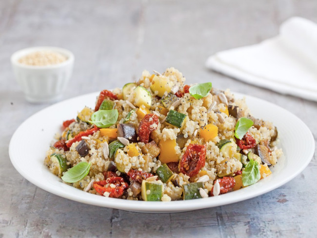
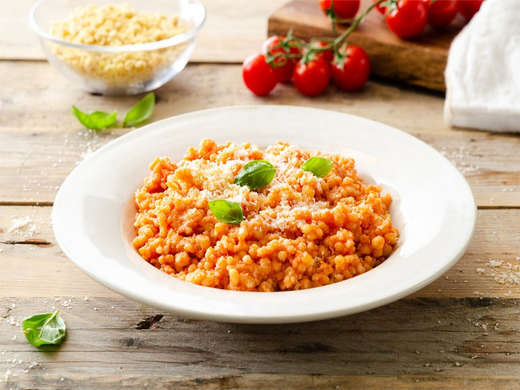
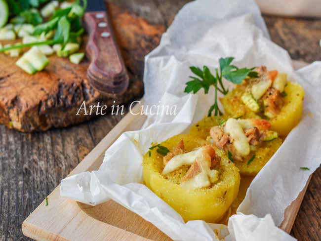

Ultime Ricette!

Quinoa con verdure
E' un piatto unico sano e gustoso realizzato con fresche verdure estive, melanzane, zucchine e peperoni, ghiotti pomodorini secchi sott'olio e semi misti...

Fregola al pomodoro
Gustosa e facile da realizzare, si prepara in meno di mezz'ora. La fregola al pomodoro è un primo piatto semplice ma appagante, grazie alla morbida consistenza...

Patate ripiene
È una pietanza totalmente vegetariana e la combinazione di sapori, consistenze e profumi la rendono un sicuro successo su ogni tavola...
Quanto ne sai della tua cucina?
Scoprilo con il nostro QUIZ!